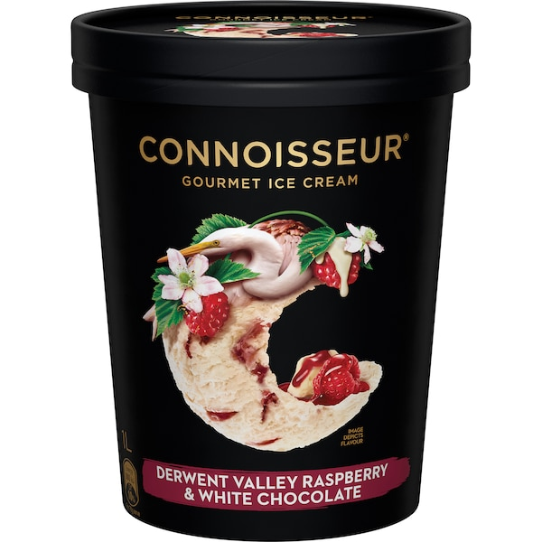
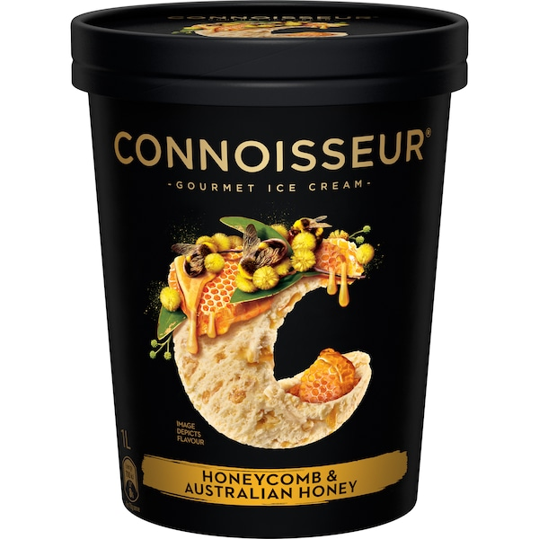

This right here is why Connoisseur can get away with all the random flavours it does. This is perfection. A rich, creamy, vanilla that doesn't taste artificial at all. No faults, no errors. 10/10.
Connoisseur
'Classic Vanilla'
10/10

This one's good you'll like it.
Connoisseur
'Derwent Valley Raspberry & White Chocolate'
8/10

Kind of just a milk chocolate ice cream with a bunch of very little brownie chunks spread throughout. Can't really fault it but not mind blowing in any way. 8/10
Connoisseur
'Chocolate Brownie Custard'
8/10

The ice block version of this is GOAT tier. For whatever reason when they put it in a tub it's just good.
Connoisseur
'Cookies & Cream'
7/10

Does a really good job of replicating black forest cake. Cream flavoured ice cream, with cherry bits and brownie bits, and also chocolate sauce throughout. One of Connoisseur's best. 8.5/10
Connoisseur
'Black Forest'
9/10

Tastes good, I'd give it a 7/10, but this should just be called 'Australian Honey' flavour. Like technically there's little fake honeycomb pieces in there. But there's only like 3 of them.
Connoisseur
'Honeycomb & Australian Honey'
7/10

Look. I didn't really like this one. But that doesn't mean it's bad. It's probably good. I just don't like coffee. And that's okay. I think.
Connoisseur
'Café Grande'
no rating (i don't like coffee)

If you're someone who LOVES mint then you might enjoy this. If you're the kind of person who, on occasion, treats themself with some mint chocolate ice cream, you'll think this tastes like toothpaste.
Connoisseur
'Mint & Cookies'
6/10

Would be one of the best if it didn't taste so synthetic. Don't know if they used hazelnut extract or what but it has a very stong, unpleasant aftertaste.
Connoisseur
'Roasted Hazelnut & Chocolate'
7/10
Connoisseur
'Baked Choc Chip Cookie'
7/10